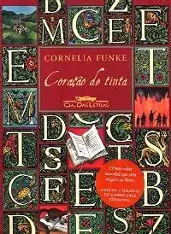
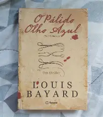
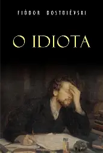
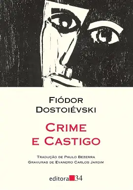
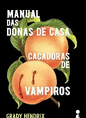

Coração de Tinta
Mortimer e sua filha Meggie partilham a paixão por livros e viagens. Ele tem o dom de dar vida às personagens e histórias dos livros, tanto que sua mulher desapareceu nove anos antes, após a leitura de Coração de Tinta, quando os vilões do livro pularam para o mundo real. Mortimer precisa trazer sua mulher de volta, mas ao mesmo tempo tem de proteger sua filha e devolver os vilões às páginas do livro.

O palido olho azul
O Pálido Olho Azul é um thriller gótico e policial ambientado em 1830, em que o detetive aposentado Augustus Landor investiga assassinatos na Academia Militar de West Point com a ajuda de um jovem cadete chamado Edgar Allan Poe. Com atmosfera sombria, excelente ambientação e atuações marcantes de Christian Bale e Harry Melling, o filme combina mistério, drama histórico e sutis elementos de terror. Vale a pena para quem aprecia narrativas investigativas e ritmo mais cadenciado.

O idiota
O romance O Idiota (1868), escrito pelo autor russo Fiódor Dostoiévski, conta a história do Príncipe Lev Nikoláievitch Míchkin. Ele é um homem bondoso, puro e inocente que volta a São Petersburgo após passar anos em tratamento psiquiátrico na Suíça devido a uma grave epilepsia
1984
O livro 1984, escrito por George Orwell e publicado em 1949, é uma obra distópica que retrata uma sociedade dominada por um regime totalitário opressor. A história serve como um alerta severo contra a vigilância extrema, a censura governamental e a manipulação absoluta da verdade.

Crime e Castigo
Crime e Castigo, escrito por Fiódor Dostoiévski e publicado em 1866, acompanha a história de Ródia Raskólnikov, um jovem ex-estudante empobrecido que vive em São Petersburgo.

Manual das donas de Casa: Caçadoras de Vampiros
Em Manual das donas de casa caçadoras de vampiros (The Southern Book Club's Guide to Slaying Vampires), escrito por Grady Hendrix, Patricia Campbell vive uma rotina sufocante nos anos 1990. O seu único alívio é um clube do livro de crimes reais com as amigas. Quando um vizinho charmoso e misterioso chega ao bairro e crianças começam a desaparecer, ela suspeita que ele seja um monstro letal e decide caçá-lo